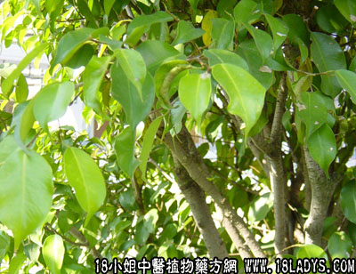

潺稿树根皮(中药材植物名:潺稿树)(植物科目:樟科)

植物名：潺稿树.
生长环境：本品为常绿小乔木。生于疏林中，或山坡灌木丛中。
分布：广东与广西的南部，海南普遍分布，广州近郊山野常见。
入药部分：根、皮。
采集期：全年。
自采地点：山岗、荒地。
性味：性寒凉。
功能：解阳疮热毒，本品胶质甚大，可作外敷料赋形剂，不作内服。
主治、用量和用法：1、腮肿；2、红肿热毒；3、热毒疮，以上均生用捣烂，敷患处；4、溃疡烂肉：干用为末，滚水调匀，冻敷患处，入脓水多，日患二、三次。
验方1：（治热毒疮方）潺稿树根皮、如意草、蒲公英、火炭母各等分，俱鲜用，捣烂外敷。如干用为末，滚水调敷。
（方解）本方潺稿树根皮，清凉解毒及作赋形剂，火炭母、蒲公英清热解毒，如意草解毒消肿，凡红肿焮痛阳疮，用之有效。
验方2：（治背痈方）潺稿树根皮2份、如意草1份，生捣烂外敷，或干用为末，加蜜调敷。
（方解）方中之潺稿树根皮清热解毒，如意草消肿解毒，阳性背痈有效。
（方歌）疮科潺稿树根皮，炭母如意蒲公英，生捣外敷涂患处，红肿疮疡毒自清，除去炭毛公英草，加蜜疗痈效最灵。